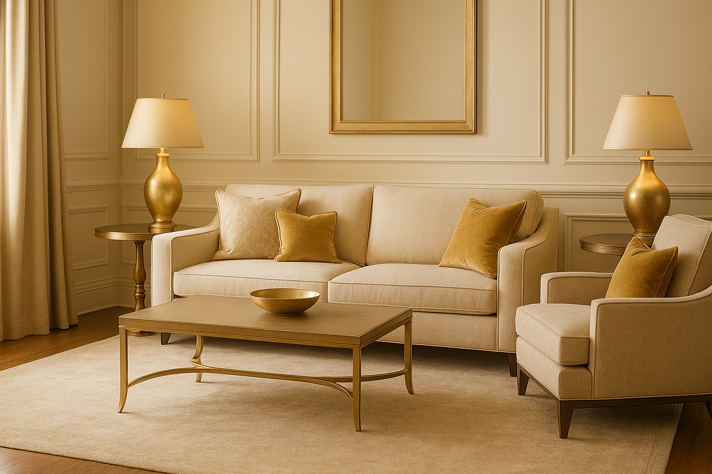

Leitura recomendada
O foco principal do site agora está na estrutura para móveis e produtos.
Sessões externas continuam disponíveis para projetos selecionados, mas aparecem de forma discreta dentro da nova arquitetura de conteudo.
Segmento complementar
Esta frente permanece como atuação complementar, enquanto o site concentra sua comunicação principal em fotografia moveleira, produtos e apresentação comercial.
Leitura recomendada
Sessões externas continuam disponíveis para projetos selecionados, mas aparecem de forma discreta dentro da nova arquitetura de conteudo.
Como entra na estrutura
Quando o projeto pede locação, movimento, luz natural e leitura mais editorial, a sessão externa pode entrar como extensão da linguagem principal do estúdio.
